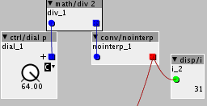
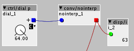
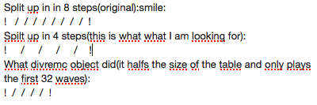

not much into math/ ; it seems math/div2 well divides by two?
I never got to 128….

Im not quite sure what you mean.... you mean such that using the keyboard it goes up in steps of 1 rather than 0.5 on a dial p ? this is not (currently) possible, the reason 128 steps is chosen is so thats its compatible with midi controllers.
of course, mathematically you could multiply by 2, then ignore over 64... or use divremc (den 1) to ignore 0.5 steps.
i think for my 'application' i would just create wavetables with 128 steps, otherwise a midi controller is going to feel a bit weird, with either the top end missing (if you use 0-63) or 'jumpy' if you use round(cc/2)
we have talked in the past that Axoloti could do with more 'UI' features e.g. presentation modes etc, arbitrary units on dials, ranges etc... I guess one day it might happen... though personally my aim is to not really use attached to the computer so for me, its not that important... though Id like better parameter mapping for controllers like Push/Axoloti Control.
Thanks @thetechnobear  cloudy/rainy day here; spot on! divremc (den2) does what @jaffasplaffa has in mind, everyday learning process...
cloudy/rainy day here; spot on! divremc (den2) does what @jaffasplaffa has in mind, everyday learning process...
I am trying to index the dial for 64 steps instead of 128. For a wavetable with 64 waves instead of 128 waves.
Here is an example of a wavetable patch with only 64 steps and dial b, which sounds perfect, no clicks. When using the dial p(128 step) there is a lot of clicks. That happens cause every second step starts in the middle of a cycle.... Anyway, test the patch for yourself.
Wavetable with 64 step... It morphs from a saw wave to a sine wave(sorry for the external link. Would be nice if the community would allow .raw files to be hosted..., but I guess then the server space needed would increase rapidly):
https://mega.nz/#!3II0iTjb!7VRaph3ZqKzEl2h5Rmo4DUn0WZPz9Lky5M85ppYLPeQ
Patch:
WT OWN 64 syeps BIPOLAR.axp (4.4 KB)
But it seems like you guys already figured it out  Cool... WIll test it
Cool... WIll test it
@thetechnobear
This wavetable is only 8196 samples long:
wavelength =128 samples
Number of waves =64samples
128X64=8196 samples
…. ALOT smaller than the 262144 that is used for Serum…. Getting closer to having a reasonable size But also if you make less steps it is easy to make them a lot smaller, even with Serum. This wavetable is made with this free program ment for making wavetables for Blofeld, but it also exports as .wav files.....
Yes sure I also think 128 steps is much easier to use, but some programs only uses 64 waves.... And I think the easiest way to reduce sample size of the wavetable is to reduce number of waves.
I just tested the divremc trick. I connect dial p to divrem in and from div out to conv/nointerp in. Denominator set to 2.
But it only scans half way through the 64 steps. The divrem just kind of reduce the table size to half instead of indexing it to 64 step instead of 128 steps. The dial still needs to cover the whole table but ONLY use 64 steps instead of 128.... I think I have to explain it in another way(with less steps though, but you get the idea)....:

EDIT:
Figured it out. I had to set divremc denominator to 1 instead of 2
AWESOME. Then you can use this free program to make smaller wavetables than with Serum:
http://lady.rdsor.ro/~kotro/index.php?m=soft#mopho
(Click link and scroll up a tiny bit)
interesting... I've not had a huge amount of time to look into all this.
but I have been digging into audio-term (its free) a bit more, (running in a virtual windows session) , and its very good...
its a bit quirky initially, but actually once you get used to it, you can work pretty quickly in it.
the good news is it will output wavs in pretty much any step size, with any sample size (ok, powers of 2, but we need this anyway)... once Ive got a more refined 'workflow' I'll post back some details if people are interested.
Yeah please post it. I can't use the AudioTerm on my tiny notebook, but maybe other would like it.
I am also planning a few tutorials on wavetables. How to make single cycle waves and to make wavetables with 128 steps in Serum. I Think I am just gonna record the screen of my Mac when doing it. Way easier to do it like that. Not so much writting
@thetechnobear you mentioned about Serum VST:
"the issue, is it doesnt seem to have the ability to export the morph
table... "
What do you exactly mean by that?
The next is from other thread about another subject. Just thought I'd move the question here instead:
What are your ideas about implementing wavetables further? I am really interested in this subject too.
1cycle waves as oscillator objects would be REALLY nice. I made some
1cycle waves in Sound Forge and I think quality is really good. They are
1024 samples each. Could probably easily be stretched to 512 or 256 or
maybe even 128 samples...That way they dunt take up too much
memory....Probably will take even less memory making oscillator objects
out of them, than patching them up from many objects.
ok, so I'm back on this... trying to create a polyphonic expressive patch with wavetables
doing this, one thing Ive learnt is I want morphed wavetables!
basically with a morphed table, you have N waves (say 14) , but then you have a virtual wavetable of say 128 or 256 waves, the missing waves in between are generated to morph between the waves, such that when you modulate you get a nice sound.
i.e. this is used to move/slide between waves, rather than just store discrete waves in a single file.
I kind of assume this was 'normal' wave synthesis, but this is just because this is what I have in PPG WaveGenerator/Mapper and the Virus TI ( that I own) ... but not realise this is just one way.
anways, the issue is with Serum, you can morph wavetables but when you export, the morphs don't get exported, I think probably because this is done 'programatically' (which is why you can 'remove morph tables' in the options)
of course this is interesting for axoloti...
ideally, I guess we could consider trying to do morphing, I don't think its particular hard, its just interpolation... but the trick I think is determine where the tables fit in the 'virtual wavetable'... i.e. you take you 14 waves and distribute them, and how this is done is vital to getting a smooth transition.... (Ive not done any research on this yet, so may be talking BS )
(its obviously important we also do this with low cpu)
but I think in the meantime, Im going to see if audioterm can actually output the intermediate waves, and then see how 'jumpy' it is, Im hoping if there aren't too many 'key' waves it might be ok, but we will see.
Maybe also check this editor. A friend of mine made a lot of nice WTs with it, but I cant run that one ATM, so havent tested(need to install a virtual pc on my new macbook).
https://www.muffwiggler.com/forum/viewtopic.php?t=50154
Ah, now I understand about the morphed tables. Yeah they are nice Would be nice to be able to morph in Axoloti. An example:
That would surely keep the table/alloc size down to a reasonable size.
Was also wondering if anyone might have an idea how to make a wavetable with only 32 waves in Axoloti with a dial p? I can make 64(with divrem den=1) and 128 waves fit perfectly, but didnt manage to to make 32 or 16 waves wavetables work yet. One cycles works great
k, got audio term to split out the necessary wavetables.. again quirky but once you know how seems pretty simple, but with a huge amount of depth... which I don't yet understand
my simple example was grabbing 14 violin waves... load into AT, then generating a 128 wavetable
and it really sounded great (once put thru an appropriate reverb of course).
I learnt a couple of small lessons.
128 (waves) x 256 seemed fine (65kb)... might even try a bit smaller (but will depend upon content)
it pays to think about the orders of the waves a bit, so when you sweep you easily get to the waves you want... (for me i wanted timbre to rise as i went thru the table)
next time, Id also probably adapt the envelopes/gain on each slice, to try to compensate for low volumes with less harmonics... I know you can do this manually in AT, but perhaps it can do it for you.
as for axoloti, works well, I could have as many voices as i wanted, no issues ... 4 voices was 9% cpu, and the tables is shared across them all, so not too expensive, was alot of fun playing the result on my soundplane.
I'm going to rework the WT, see if I can improve it, then may publish a small sound demo.
anyone want to try these?
https://drive.google.com/file/d/0B8vvAmDF4ikoc3RYWk9VVkx6X0k/view?usp=sharing
https://drive.google.com/file/d/0B8vvAmDF4ikoMVhURF82b3ZrYzg/view?usp=sharing
https://drive.google.com/file/d/0B8vvAmDF4ikoV2lIX3pnSXVBY0E/view?usp=sharing
https://drive.google.com/file/d/0B8vvAmDF4ikoRUVGR0ZnUXlFZ3M/view?usp=sharing
should be 128 waveforms of 2048 samples each (some of them contain less than 128 waveforms
I'm curious to see if they work.
i made a PureData patch to create these
here you go: https://drive.google.com/file/d/0B8vvAmDF4ikodzYxQnNIQWQ2Qkk/view?usp=sharing
I added a "morph" feature, to create a wave table that morphs from shape A to shape B going from position 0 to 127.
To be honest, I'm shure this should all be possible to make inside Axoloti.
Maybe someone can translate this patch into Axoloti-an?
Nice @timvets Thanks
Will check it out. Havent used Pure Data before, though.
A question(without having tried it):
Have you experimented with making each wave less than 2048 samples? Is this something that could be changed easily? I am thinking about saving SDram for other purposes. A 128 step wavetable from this one is same size as Serum wavetables, 262144 samples. Would be nice with half size or even quarter size. This can be done by post processing the wavetable in Audacity, strething it. I did that with a Serum wavetable with pretty good result. But it would be awesome to be able to export the wavetable in different sizes directly, like, 1048576, 262144, 131072, 65536, etc..
Looks interesting @timvets ... Not got PD installed, but tempted
So from the UI, it looks like you draw the harmonic content and it calculates the waveform... and the morphing is this also a morph using frequency content.
if so this is the basics of what I'm using audio term for, so could be very useful to avoid diving into windows
Ok, got Pure Data installed and the patch is running, but I don't get any sound.
I checked that my Mac is selected as output and I have turned up the volume in the PD patch.
Any ideas about the errors?
I also tested that there is output from Pure Data in media>test audio&midi
Here is Pure Data:
http://msp.ucsd.edu/software.html
I installed this one:
Pd version 0.46-7, 64 bits, compiled for Macintosh OSX 10.8 or later (4 Megabytes).
But no sound for now, though.
{kind=link}
{kind=link}
{kind=link}